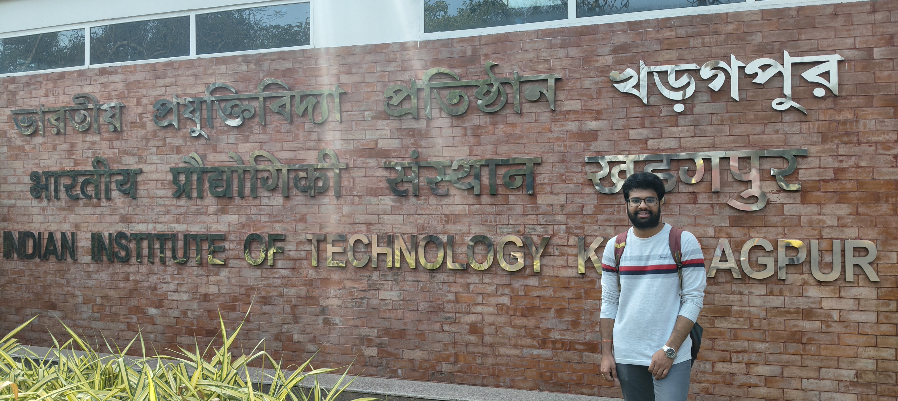
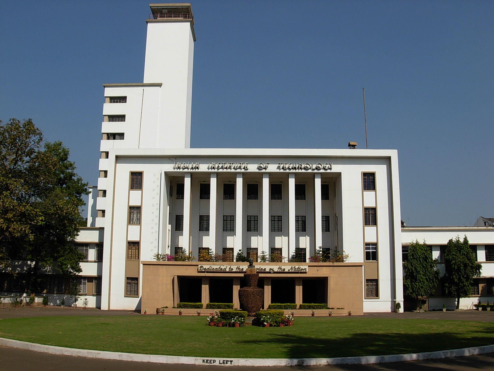
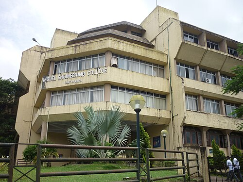
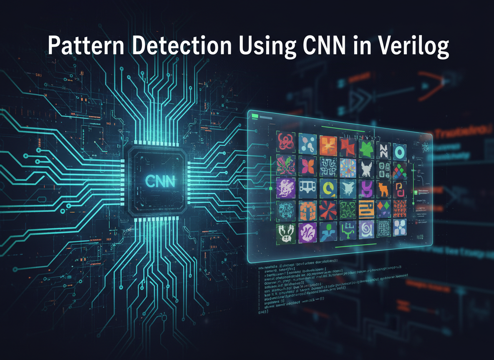
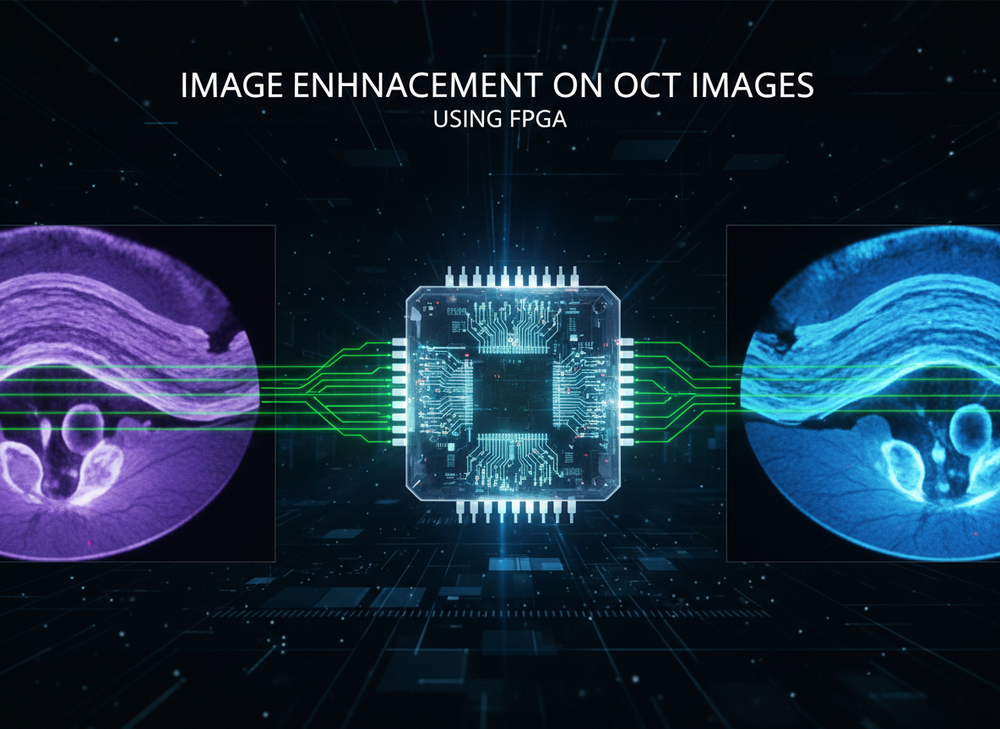
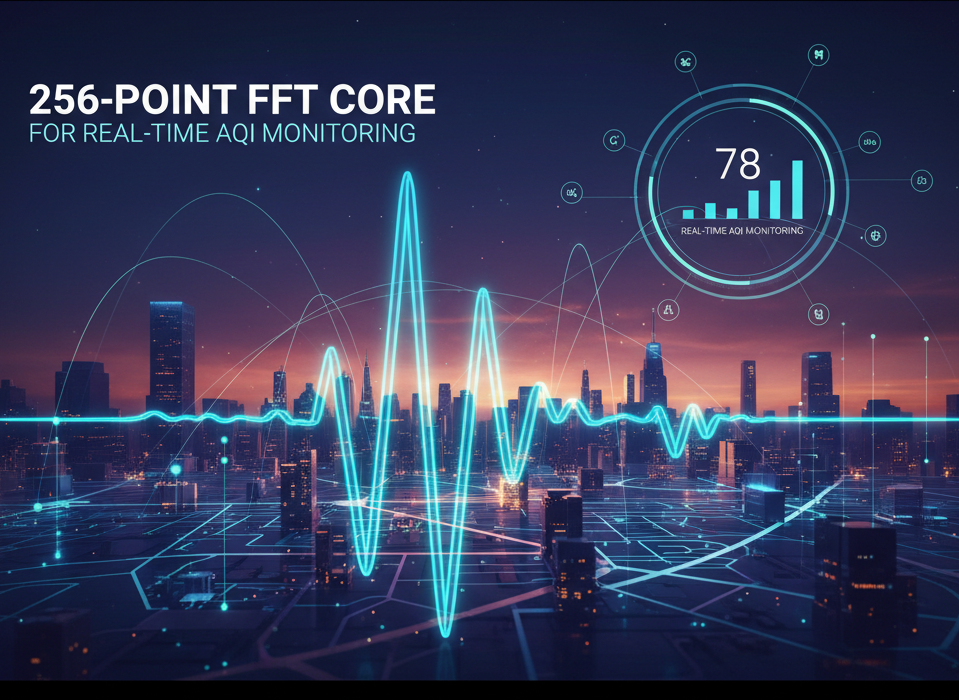
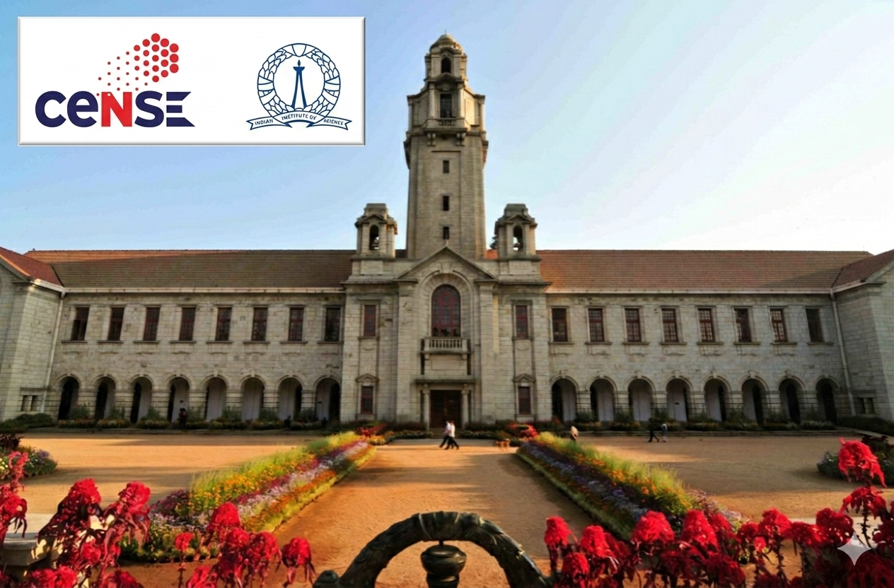
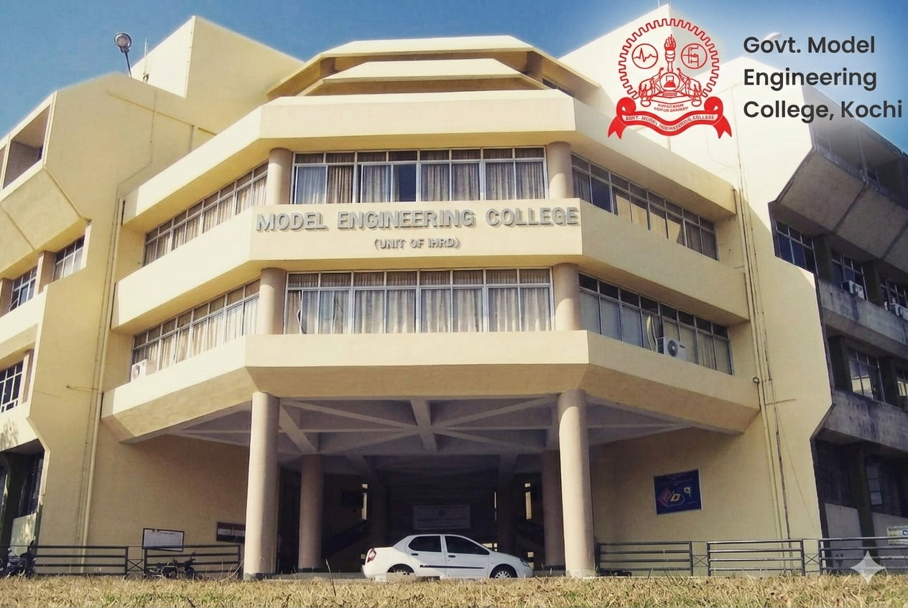

Currently @ IIT Kharagpur
Madhan
Lankalapalli
Digital VLSI Engineer specializing in RTL design, FPGA implementation, and deep learning accelerator development. I take designs from Verilog to working silicon — systolic arrays, real-time DSP pipelines, and AI inference on FPGA.
2
Research Internships
5+
FPGA Projects
8.7
CGPA / 10

SWAN Lab, IIT Kharagpur
Research Intern · FPGA DSP Systems
02 — Work
Experience

SWAN Lab · IIT Kharagpur, West Bengal
- Built a real-time FPGA DSP system in Verilog operating at 100 MHz, computing RMS, peak detection, and variance for continuous AQI signal monitoring. Integrated SPI Master and dual-port circular BRAM into a sequenced time-domain pipeline.
- Modelled and verified a 256-point FFT core with pipelined butterfly units and optimised scaling — achieving 100% dominant frequency accuracy with <0.35% RMS error across diverse signal types.

Model Engineering College, Kochi · C2S Program, MeitY, Govt. of India
- Designed and validated an object detection algorithm for ADAS — moved from Python testing to Verilog implementation on ZCU104 FPGA using Vitis AI workflow, producing a functional hardware prototype.
- Evaluated multiple detection models and selected YOLOv5 for the ZCU104 platform, reducing Verilog conversion effort and shortening prototype development time significantly.
🏆 1st Place — FPGA Design Contest, C2S Program
03 — Expertise
Technical Skills
HDL & Programming
Verilog HDL
C++
Python
FPGA Tools & EDA
Xilinx Vivado
Vivado HLS
Vitis IDE
Vitis AI
MATLAB
MultiSim
LTspice
FPGA Platforms
Nexys A7
ZedBoard
Spartan-6
Tang Nano 20K
ZCU104
VLSI Competencies
RTL Design
Digital Design
FPGA Design
HLS
Static Timing Analysis
RTL-to-GDS
Physical Design
Communication Protocols
UART
I2C
SPI
AXI4-Stream
FPGA Platforms
Nexys A7
ZedBoard
Spartan-6
Tang Nano 20K
ZCU104
Fabrication (IISc CeNSE)
Photolithography
Thin-Film Deposition
Cleanroom Protocols
Etching & Doping
Wafer Processing
04 — Academic
Education

B.Tech — Electronics & Communications Engineering
Rajiv Gandhi University of Knowledge Technologies (RGUKT AP IIIT)
📍 Nuzvid, Andhra Pradesh, India
Relevant Coursework: Digital System Design · VLSI Design Flow · Physical Design · Embedded Systems · Computer Architecture
05 — Work
Projects
Click any project to explore the full technical details.

Verilog
Artix-7
AXI4-Stream
4×4 Systolic PE Array for Convolution Operations
Parameterized Output-Stationary Systolic Array for 2D convolution. Multi-precision hardware analysis across Q8.8 to Q12.12 fixed-point formats. Deployed Laplacian edge detection on 640×640 KITTI images.
100%
Func. Coverage
0.119W
Optimal Power
Zero
Num. Error

YOLOv5
ZCU104
Vitis AI
Object Detection for ADAS on FPGA (YOLOv5s)
End-to-end ADAS pipeline: trained YOLOv5s on KITTI dataset, quantized with Vitis AI achieving 80% model size reduction, deployed as an XModel on ZCU104 FPGA for real-time inference.
90.4%
Precision
90.7%
MAP
80%
Size Cut

Verilog
Vivado
Pattern Detection Using CNN in Verilog
4-stage pipelined CNN accelerator for 8×8 pattern detection within 128×128 grayscale images. Parallel multiplier array with hierarchical adder tree compressing 36 partial products.
155.67
Max MHz
242µs
Inference

Verilog
Artix-7
MATLAB
Image Enhancement on OCT Images Using FPGA
Real-time retinal OCT image enhancement pipeline — negative transformation, brightness control, adaptive thresholding, and Sobel edge detection to identify retinal layer boundaries on Artix-7 FPGA.
Artix-7
Platform
Sobel
Edge Detect

256-pt FFT
100 MHz
IIT KGP
256-Point FFT Core for Real-Time AQI Monitoring
Pipelined butterfly FFT core operating at 100 MHz for real-time air quality signal analysis. Integrated with SPI Master, circular BRAM, and RMS/variance computation for continuous monitoring.
100MHz
Clock Freq
<0.35%
RMS Error
256pt
FFT Size
06 — Learning
Workshops & Training

CeNSE · IISc Bangalore
Summer School on Semiconductor Technology & Microfabrication
Hands-on training in wafer processing, photolithography, doping, etching, thin-film deposition, and cleanroom protocols at India's top nanoscience research center.
verify

C2S Program · MeitY, Govt. of India
FPGA Design Trainee Program
Built a Verilog-based FPGA Digital Payment System with core UPI functionalities. Secured 🏆 1st Place in the program design contest at Model Engineering College, Kochi.
verify
Udemy
High-Level Synthesis for FPGA
Transformed combinational and sequential circuits in C++ using Vivado HLS, generated RTL IP cores, and verified designs on FPGA hardware through hands-on implementation.
07 — Credentials
Certifications
91
%
System Design Through Verilog
NPTEL · IIT Guwahati
★ Top 5% Nationwide
verify
88
%
VLSI Design Flow – RTL to GDS
NPTEL · IIIT Delhi
★ Top 5% Nationwide
verify
85
%
Electronic System & PCB Design
NPTEL · IIT Madras
★ Top 5% Nationwide
verify
83
%
VLSI Physical Design
NPTEL · IIT Roorkee
★ Top 5% Nationwide
verify
✓
Verification Methodology
Maven Silicon
Industry Certification
verify
✓
High-Level Synthesis for FPGA
Udemy · Vivado HLS
Completed with Projects
verify
08 — Connect
Get In Touch
I'm actively looking for VLSI, FPGA, and semiconductor internship/job opportunities. If you're working on exciting hardware — let's talk.